คู่มือใช้งานเครื่องมือ · ระดับ Free
สมบัติสารทำความเย็น
Refrigerant Properties (P–T)
FREE
สำหรับช่างเทคนิคที่เพิ่งเริ่มงาน — อ่านแล้วทำตามได้เอง
ใช้เวลาฝึกประมาณ 30 นาที
เคสตัวอย่าง: อาคาร A แอร์ R-32 ด้านดูด 8.5 bar g · ด้านส่ง 26 bar g
อ.หนึ่ง กลับทวี / Aj. Nueng Klubtavee
tripleeenergytools.com
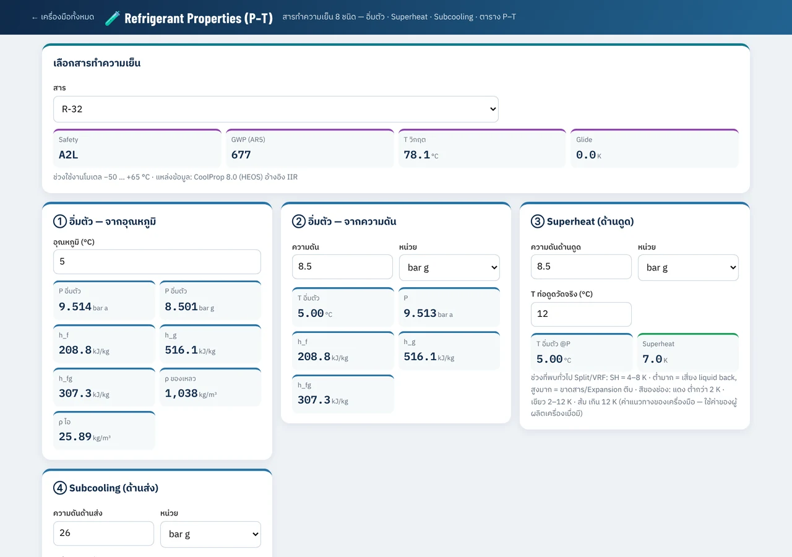
หน้าจอเครื่องมือ — เปิดได้จากเมนู Free ของเว็บไซต์
รุ่นเครื่องมือ: Free commit 638822a · จับภาพ 16 พ.ย. 2569 · คู่มือ Rev00
เครื่องมือนี้ตอบคำถามอะไร
คู่มือใช้งาน · สมบัติสารทำความเย็น (P–T) (Refrigerant Properties (P–T)) · ระดับ Free
2 / 20
| คำถามหน้างาน | ใช้การ์ดไหน | เคสอาคาร A ได้ |
|---|---|---|
| สารนี้ ปลอดภัยระดับไหน GWP เท่าไร | เลือกสารทำความเย็น | R-32: A2L · GWP 677 |
| คอยล์เย็น 5 °C เกจควรอ่านเท่าไร | ① อิ่มตัว — จากอุณหภูมิ | 8.501 bar g |
| เกจอ่าน 8.5 bar g สารเดือดที่กี่องศา | ② อิ่มตัว — จากความดัน | 5.00 °C |
| Superheat ด้านดูดเท่าไร ปกติไหม | ③ Superheat | 7.0 K (เขียว) |
| Subcooling ด้านส่งเท่าไร ปกติไหม | ④ Subcooling | 5.6 K (เขียว) |
| อยากได้ตาราง P–T ไว้ดูหน้างาน | ⑤ ตาราง P–T | 19 แถว (−30 ถึง 60 °C) |
💡 เคล็ดลับ
เครื่องมือนี้ไม่มีปุ่มคำนวณ — ผลเปลี่ยนทันทีที่พิมพ์หรือเปลี่ยนสาร
แผนที่หน้าจอ
คู่มือใช้งาน · สมบัติสารทำความเย็น (P–T) (Refrigerant Properties (P–T)) · ระดับ Free
3 / 20
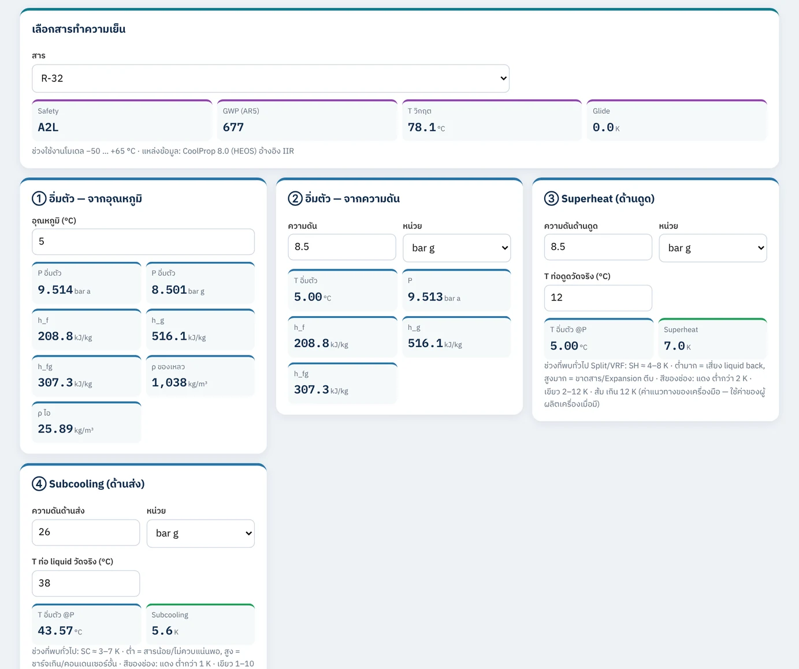
1
2
3
4
5
6
1
เลือกสารทำความเย็น — ทำก่อนทุกครั้ง
2
① อิ่มตัว — จากอุณหภูมิ
3
② อิ่มตัว — จากความดัน
4
③ Superheat (ด้านดูด)
5
④ Subcooling (ด้านส่ง)
6
⑤ ตาราง P–T
มีสารให้เลือก 8 ชนิด: R-717 · R-410A · R-32 · R-22 · R-134a · R-404A · R-407C · R-454B
ช่วงใช้งานของเครื่องมือ: อุณหภูมิอิ่มตัว −50 ถึง 65 °C
⚠️ ระวัง
เลือกสารผิด ทุกการ์ดผิดตาม — ดูชนิดสารจากป้ายเครื่อง (nameplate) ก่อนกรอก
เปิดบนมือถือ และสลับภาษา
คู่มือใช้งาน · สมบัติสารทำความเย็น (P–T) (Refrigerant Properties (P–T)) · ระดับ Free
4 / 20
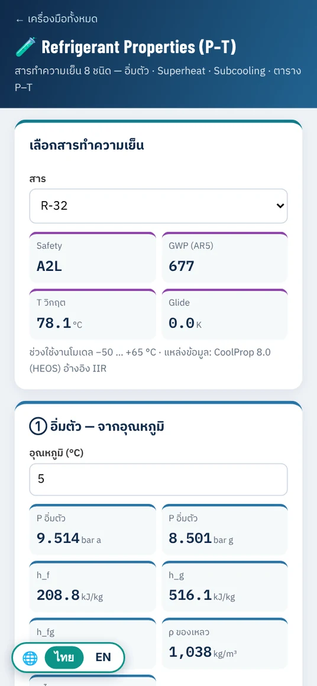
ใช้บนมือถือได้ — การ์ดเรียงเป็นคอลัมน์เดียว เหมาะกับการใช้ข้างคอยล์ร้อน
ปุ่ม ไทย | EN ลอยอยู่ด้านล่าง กดสลับภาษาได้ ค่าที่กรอกไว้ไม่หาย
ช่องหน่วยความดันตั้งต้นเป็น bar g · เกจที่อ่าน psi เลือก psi g
หน้านี้ไม่มีปุ่มบันทึก — ต้องการเก็บผลให้จดค่าหรือพิมพ์หน้าจอเป็น PDF
💡 เคล็ดลับ
เกจที่อ่านเป็น psi: เลือกหน่วย psi g ในช่องหน่วยได้เลย ไม่ต้องแปลงเอง
คำศัพท์ 7 คำที่ต้องรู้ก่อนเริ่ม
คู่มือใช้งาน · สมบัติสารทำความเย็น (P–T) (Refrigerant Properties (P–T)) · ระดับ Free
5 / 20
| คำ | ความหมายแบบสั้น | จำง่าย ๆ |
|---|---|---|
| อุณหภูมิอิ่มตัว | อุณหภูมิที่สารเดือดหรือกลั่นตัวที่ความดันนั้น | หนึ่งความดัน หนึ่งอุณหภูมิ |
| bar g · bar a | bar g = ที่เกจอ่าน · bar a = ความดันสัมบูรณ์ | bar a = bar g + 1.013 |
| Superheat (SH) | ไอที่ท่อดูดร้อนกว่าอุณหภูมิอิ่มตัวกี่องศา | กันของเหลวไหลเข้าคอมเพรสเซอร์ |
| Subcooling (SC) | ของเหลวที่ท่อ liquid เย็นกว่าอุณหภูมิอิ่มตัวกี่องศา | ยืนยันว่าเป็นของเหลวล้วน |
| K | ผลต่างอุณหภูมิ — 1 K เท่ากับ 1 °C | ใช้กับ SH และ SC |
| Glide · dew · bubble | สารผสมบางชนิดเดือดไม่ที่อุณหภูมิเดียว: bubble = เริ่มเดือด · dew = เริ่มกลั่นตัว · glide = ผลต่าง | SH ใช้ dew · SC ใช้ bubble |
| GWP · Safety class | GWP = ศักยภาพทำให้โลกร้อนเทียบ CO₂ · Safety = ระดับความเป็นพิษและการติดไฟ | A1 ไม่ติดไฟ · A2L ติดไฟได้เล็กน้อย |
💡 เคล็ดลับ
h_f · h_g · h_fg และความหนาแน่น ใช้กับงานคำนวณวัฏจักร — งานตรวจเช็กทั่วไปใช้แค่ความดันกับอุณหภูมิ
เตรียมข้อมูลก่อนเริ่ม
คู่มือใช้งาน · สมบัติสารทำความเย็น (P–T) (Refrigerant Properties (P–T)) · ระดับ Free
6 / 20
| การ์ด | ข้อมูลที่ต้องมี | แหล่งข้อมูล | ค่าอาคาร A |
|---|---|---|---|
| เลือกสาร | ชนิดสารทำความเย็น | ป้ายเครื่องที่คอยล์ร้อน | R-32 |
| ③ | ความดันด้านดูด (low side) | เกจแมนิโฟลด์สีน้ำเงิน | 8.5 bar g |
| ③ | อุณหภูมิผิวท่อดูด ใกล้คอมเพรสเซอร์ | เทอร์โมมิเตอร์แบบหนีบท่อ | 12 °C |
| ④ | ความดันด้านส่ง (high side) | เกจแมนิโฟลด์สีแดง | 26 bar g |
| ④ | อุณหภูมิผิวท่อ liquid ออกจากคอยล์ร้อน | เทอร์โมมิเตอร์แบบหนีบท่อ | 38 °C |
⚠️ ระวัง
วัดอุณหภูมิท่อให้แนบผิวโลหะและหุ้มฉนวนทับหัววัด — ค่าคลาด 2 °C คือ SH หรือ SC คลาด 2 K
ขั้นที่ 1
เลือกสารทำความเย็น
คู่มือใช้งาน · สมบัติสารทำความเย็น (P–T) (Refrigerant Properties (P–T)) · ระดับ Free
7 / 20
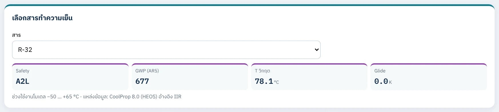
1
2
1
เลือกสาร — สารผสมที่มี glide มีคำว่า (ผสม) ต่อท้าย
2
ข้อมูลของสาร: Safety A2L · GWP 677 · อุณหภูมิวิกฤต 78.1 °C · Glide 0.0 K
R-32 เป็น A2L — ติดไฟได้เล็กน้อย งานเชื่อมและการไล่สารต้องระวังประกายไฟ
เลือกสารแล้ว การ์ดทุกใบด้านล่างคำนวณใหม่ทันที
ขั้นที่ 2
การ์ด ① และ ②: ความดัน ↔ อุณหภูมิอิ่มตัว
คู่มือใช้งาน · สมบัติสารทำความเย็น (P–T) (Refrigerant Properties (P–T)) · ระดับ Free
8 / 20
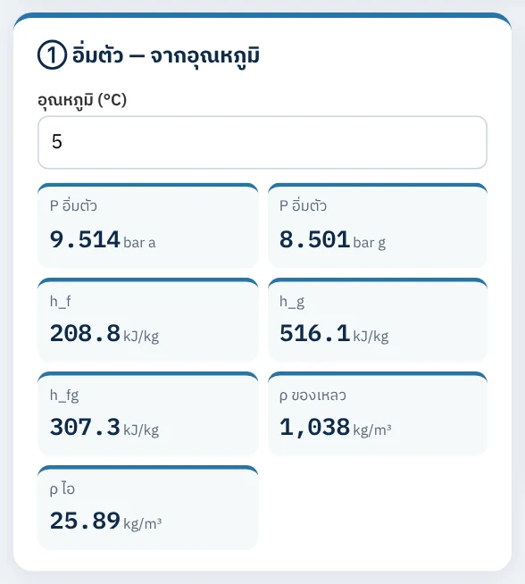
1
2
1
อุณหภูมิ ที่อยากรู้ความดัน (°C)
2
ผล: ความดันอิ่มตัว 9.514 bar a = 8.501 bar g · h_fg 307.3 kJ/kg · ความหนาแน่นของเหลว 1,038 · ไอ 25.89 kg/m³
การ์ด ① ใช้เมื่อรู้อุณหภูมิ: คอยล์เย็น 5 °C เกจด้านดูดควรอ่านใกล้ 8.501 bar g
การ์ด ② กลับทาง: เกจอ่าน 8.5 bar g → สารเดือดที่ 5.00 °C
อุณหภูมิอิ่มตัวด้านดูดต่ำกว่า 0 °C = คอยล์เย็นมีโอกาสเป็นน้ำแข็ง
ขั้นที่ 3
การ์ด ③: Superheat ด้านดูด
คู่มือใช้งาน · สมบัติสารทำความเย็น (P–T) (Refrigerant Properties (P–T)) · ระดับ Free
9 / 20
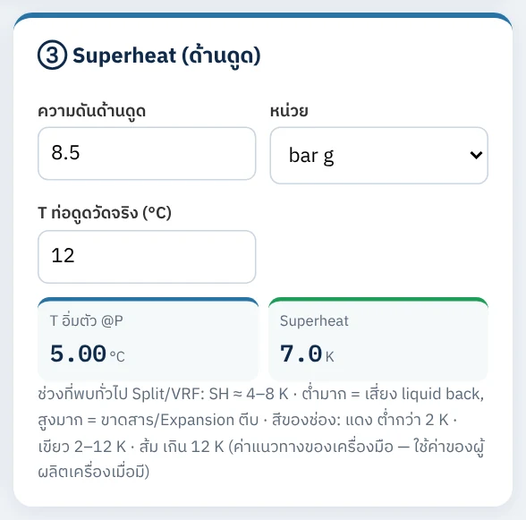
1
2
3
4
1
ความดันด้านดูด จากเกจ
2
หน่วย — bar g · psi g · bar a เลือกให้ตรงกับเกจ
3
อุณหภูมิท่อดูด ที่วัดได้ (°C)
4
ผล: อุณหภูมิอิ่มตัว 5.00 °C → Superheat = 12 − 5.00 = 7.0 K
สีขอบบนของช่อง Superheat: แดง ต่ำกว่า 2 K · เขียว 2–12 K · ส้ม เกิน 12 K
ช่วงสีเป็นค่าแนวทางของเครื่องมือ — มีค่าของผู้ผลิตเครื่องให้ใช้ค่านั้น
💡 เคล็ดลับ
บรรทัดสีเทาใต้การ์ดบอกความหมาย: ต่ำมาก = เสี่ยงของเหลวไหลกลับ · สูงมาก = สารขาดหรืออุปกรณ์ลดความดันตีบ
ลองเปลี่ยนค่า (What-if): อุณหภูมิท่อดูด
คู่มือใช้งาน · สมบัติสารทำความเย็น (P–T) (Refrigerant Properties (P–T)) · ระดับ Free
10 / 20
| อุณหภูมิท่อดูด (°C) | Superheat (K) | สี | อ่านว่า |
|---|---|---|---|
| 6 | 1.0 | แดง | ต่ำมาก — เสี่ยงของเหลวไหลกลับเข้าคอมเพรสเซอร์ |
| 12 (อาคาร A) | 7.0 | เขียว | อยู่ในช่วงแนวทาง |
| 20 | 15.0 | ส้ม | สูงมาก — สารขาดหรืออุปกรณ์ลดความดันตีบ |
ทำเอง: แก้ช่องอุณหภูมิท่อดูดของการ์ด ③ → อ่านผล → แก้กลับเป็น 12
ความดันเท่าเดิม อุณหภูมิอิ่มตัวเท่าเดิม (5.00 °C) — Superheat เปลี่ยนตามอุณหภูมิท่อที่วัดตรง ๆ
อ่านค่าตอนเครื่องเดินนิ่งแล้ว — ช่วงเพิ่งเปิดเครื่องค่ายังแกว่ง
ขั้นที่ 4
การ์ด ④: Subcooling ด้านส่ง
คู่มือใช้งาน · สมบัติสารทำความเย็น (P–T) (Refrigerant Properties (P–T)) · ระดับ Free
11 / 20
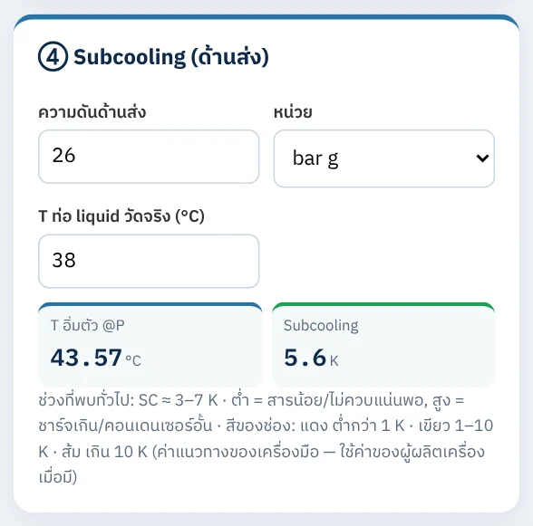
1
2
3
4
1
ความดันด้านส่ง จากเกจ
2
หน่วย
3
อุณหภูมิท่อ liquid ที่วัดได้ (°C)
4
ผล: อุณหภูมิอิ่มตัว 43.57 °C → Subcooling = 43.57 − 38 = 5.6 K
สีขอบบนของช่อง Subcooling: แดง ต่ำกว่า 1 K · เขียว 1–10 K · ส้ม เกิน 10 K (ค่าแนวทางของเครื่องมือ)
Superheat คิด "ที่วัด ลบ อิ่มตัว" · Subcooling คิด "อิ่มตัว ลบ ที่วัด" — เครื่องมือจัดให้แล้ว
ลองเปลี่ยนค่า (What-if): อุณหภูมิท่อ liquid
คู่มือใช้งาน · สมบัติสารทำความเย็น (P–T) (Refrigerant Properties (P–T)) · ระดับ Free
12 / 20
| อุณหภูมิท่อ liquid (°C) | Subcooling (K) | สี | อ่านว่า |
|---|---|---|---|
| 43 | 0.6 | แดง | ต่ำ — สารน้อยหรือควบแน่นไม่พอ |
| 38 (อาคาร A) | 5.6 | เขียว | อยู่ในช่วงแนวทาง |
| 30 | 13.6 | ส้ม | สูง — เติมสารเกินหรือของเหลวค้างในคอยล์ร้อน |
ทำเอง: แก้ช่องอุณหภูมิท่อ liquid ของการ์ด ④ → อ่านผล → แก้กลับเป็น 38
ดู Superheat และ Subcooling คู่กัน — SH สูงพร้อม SC ต่ำชี้ไปทางสารขาด
คำอ่านในตารางมาจากบรรทัดสีเทาใต้การ์ด เป็นแนวทางเบื้องต้น ไม่ใช่ข้อวินิจฉัย
ลองเปลี่ยนค่า (What-if): เลือกสารผิด เกิดอะไรขึ้น
คู่มือใช้งาน · สมบัติสารทำความเย็น (P–T) (Refrigerant Properties (P–T)) · ระดับ Free
13 / 20
| สารที่เลือก (ค่าเกจเดิมของอาคาร A) | อุณหภูมิอิ่มตัวด้านดูด (°C) | Superheat (K) | Subcooling (K) |
|---|---|---|---|
| R-32 (ถูกต้อง) | 5.00 | 7.0 | 5.6 |
| R-410A | 5.63 | 6.4 | 6.6 |
| R-22 | 21.60 | -9.6 | นอกช่วง — ไม่แสดงค่า |
| R-134a | 37.55 | -25.5 | นอกช่วง — ไม่แสดงค่า |
ทำเอง: เปลี่ยนสารในการ์ดบนสุด → อ่านการ์ด ③ ④ → เปลี่ยนกลับเป็น R-32
เลือกเป็น R-22 หรือ R-134a ผลผิดจนเห็นชัด (Superheat ติดลบ มีกรอบเตือน)
เลือกเป็น R-410A ผลดูปกติ ทั้งที่ผิด — สารสองตัวนี้ความดันใกล้กัน จึงต้องยืนยันชนิดสารจากป้ายเครื่องเสมอ
สารผสมที่มี glide: ตัวอย่าง R-407C
คู่มือใช้งาน · สมบัติสารทำความเย็น (P–T) (Refrigerant Properties (P–T)) · ระดับ Free
14 / 20
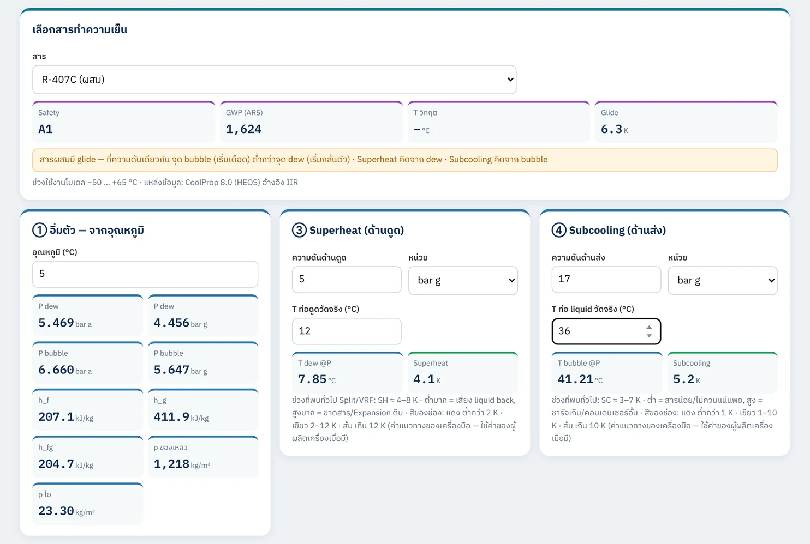
เลือกสารผสม กรอบสีเหลืองใต้ข้อมูลสารบอกว่า Superheat คิดจาก dew · Subcooling คิดจาก bubble
การ์ด ①: ที่ 5 °C ความดัน dew 4.456 bar g · bubble 5.647 bar g
ที่ 5 bar g จุด dew 7.85 °C · จุด bubble 1.77 °C — ต่างกันเท่า glide (ภาพแสดงเฉพาะการ์ด ① ③ ④)
การ์ด ③ ④ ของตัวอย่างนี้: Superheat 4.1 K (จาก dew 7.85 °C) · Subcooling 5.2 K (จาก bubble 41.21 °C)
⚠️ ระวัง
ตาราง P–T ของผู้ผลิตสารผสมก็มีสองคอลัมน์ (dew / bubble) — ใช้ผิดคอลัมน์ ค่าคลาดเท่า glide (6.3 K สำหรับ R-407C)
ขั้นที่ 5
การ์ด ⑤: ตาราง P–T
คู่มือใช้งาน · สมบัติสารทำความเย็น (P–T) (Refrigerant Properties (P–T)) · ระดับ Free
15 / 20
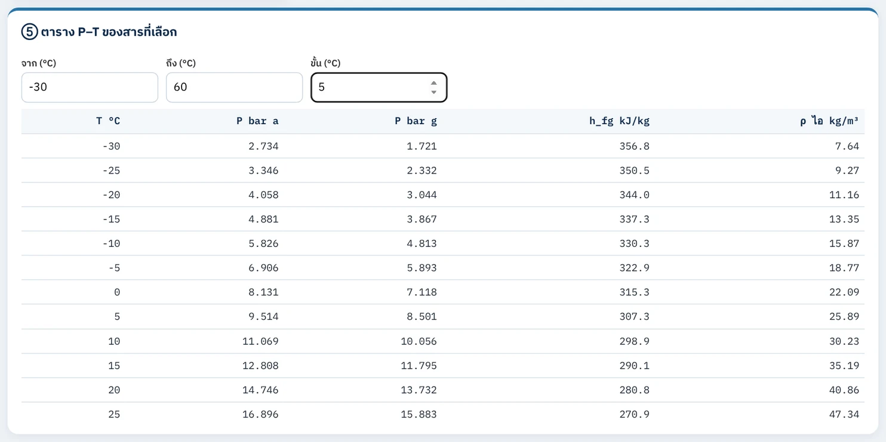
1
2
3
4
1
จาก (°C)
2
ถึง (°C)
3
ขั้น — ระยะห่างของแต่ละแถว (°C)
4
ตาราง: T · P bar a · P bar g · h_fg · ความหนาแน่นไอ
ตัวอย่างแถว 5 °C: 5 | 9.514 | 8.501 | 307.3 | 25.89
ตัวอย่างแถว 45 °C: 45 | 27.948 | 26.935 | 224.0 | 84.86
ตารางแสดงได้สูงสุด 80 แถว และเฉพาะช่วง −50 ถึง 65 °C · สารผสมมีคอลัมน์ P bubble เพิ่ม
ข้อความเตือน
คู่มือใช้งาน · สมบัติสารทำความเย็น (P–T) (Refrigerant Properties (P–T)) · ระดับ Free
16 / 20
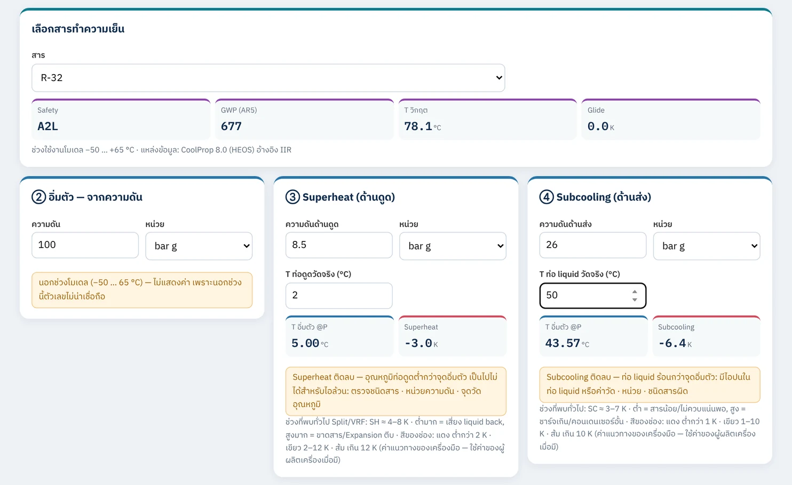
นอกช่วงโมเดล — อุณหภูมิอิ่มตัวนอก −50 ถึง 65 °C (ภาพ: การ์ด ② กรอก 100 bar g) เครื่องมือไม่แสดงตัวเลข · ภาพแสดงเฉพาะการ์ด ② ③ ④
Superheat ติดลบ — ท่อดูดเย็นกว่าอุณหภูมิอิ่มตัว เป็นไปไม่ได้สำหรับไอล้วน ให้ตรวจชนิดสาร หน่วยความดัน และจุดวัด
Subcooling ติดลบ — ท่อ liquid ร้อนกว่าอุณหภูมิอิ่มตัว: มีไอปนในท่อ หรือค่าวัดผิด
ความดันสัมบูรณ์ต้องมากกว่า 0 — กรอกค่าติดลบหรือเลือกหน่วยผิด
⚠️ ระวัง
เห็นกรอบสีเหลือง อย่าเพิ่งสรุปอาการของเครื่อง — ตรวจชนิดสาร หน่วย และค่าที่กรอกก่อน
ข้อผิดพลาดที่พบบ่อย
คู่มือใช้งาน · สมบัติสารทำความเย็น (P–T) (Refrigerant Properties (P–T)) · ระดับ Free
17 / 20
✗ ไม่เลือกสารก่อน
✓ ทุกการ์ดคิดจากสารที่เลือก — ดูป้ายเครื่องก่อนกรอก
✗ กรอก psi ลงช่อง bar
✓ เกจ psi ให้เลือกหน่วย psi g — กรอก 120 ลงช่อง bar g ผลผิดทั้งหมด
✗ วัดอุณหภูมิอากาศแทนผิวท่อ
✓ ต้องวัดผิวท่อโลหะ หุ้มฉนวนทับหัววัด
✗ วัดท่อผิดเส้น
✓ Superheat = ท่อดูด (เส้นใหญ่ เย็น) · Subcooling = ท่อ liquid (เส้นเล็ก อุ่น)
✗ อ่านค่าตอนเครื่องเพิ่งเดิน
✓ รอให้ความดันและอุณหภูมินิ่งก่อน
✗ สารผสมใช้จุดเดียว
✓ Superheat ใช้ dew · Subcooling ใช้ bubble
✗ ถือช่วงสีเป็นเกณฑ์ตัดสิน
✓ เป็นค่าแนวทางของเครื่องมือ — ใช้ค่าของผู้ผลิตเครื่องเมื่อมี
✗ ไม่เก็บผล
✓ หน้านี้ไม่มีปุ่มบันทึก — จดค่าหรือพิมพ์เป็น PDF
แบบฝึกหัด: อาคาร B
คู่มือใช้งาน · สมบัติสารทำความเย็น (P–T) (Refrigerant Properties (P–T)) · ระดับ Free
18 / 20
| ข้อมูล | ค่า |
|---|---|
| สารทำความเย็น (จากป้ายเครื่อง) | R-410A |
| การ์ด ①: อุณหภูมิ | 7 °C |
| การ์ด ③: ความดันด้านดูด · อุณหภูมิท่อดูด | 9.0 bar g · 14 °C |
| การ์ด ④: ความดันด้านส่ง · อุณหภูมิท่อ liquid | 27 bar g · 40 °C |
คำถาม — กรอกแล้วตอบ
1
Safety class = ______ · GWP = ______
2
ที่ 7 °C เกจควรอ่าน ______ bar g
3
Superheat = ______ K (สี ______)
4
Subcooling = ______ K (สี ______)
💡 เคล็ดลับ
เริ่มจากเปลี่ยนสารเป็น R-410A ในการ์ดบนสุด
เฉลยแบบฝึกหัด อาคาร B
คู่มือใช้งาน · สมบัติสารทำความเย็น (P–T) (Refrigerant Properties (P–T)) · ระดับ Free
19 / 20
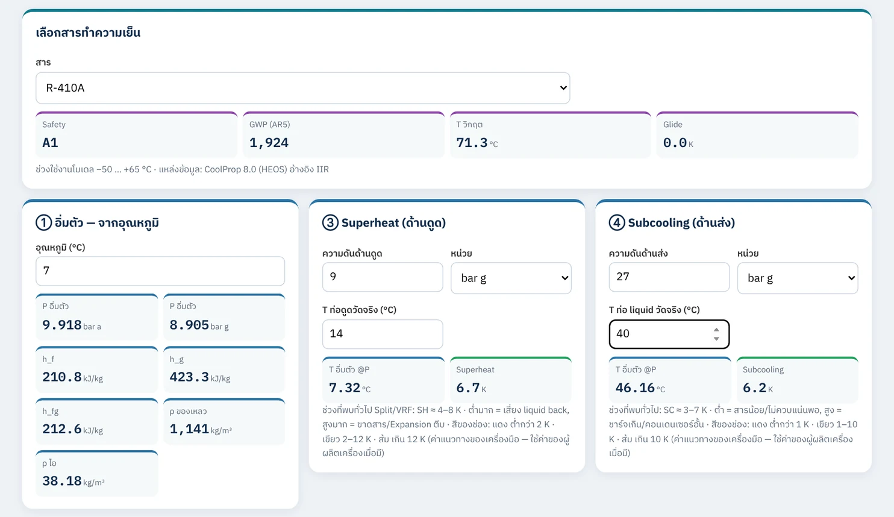
1) R-410A: Safety A1 · GWP 1,924
2) ที่ 7 °C ความดันอิ่มตัว 8.905 bar g (9.918 bar a)
3) อุณหภูมิอิ่มตัวด้านดูด 7.32 °C → Superheat 6.7 K (เขียว)
4) อุณหภูมิอิ่มตัวด้านส่ง 46.16 °C → Subcooling 6.2 K (เขียว)
✓ ผ่าน
ได้ตัวเลขตรงกัน = ใช้เครื่องมือเป็นแล้ว · ภาพแสดงเฉพาะการ์ดที่ใช้ในแบบฝึก (① ③ ④)
สรุป 1 หน้า (พิมพ์ติดไว้ข้างคอมพิวเตอร์)
คู่มือใช้งาน · สมบัติสารทำความเย็น (P–T) (Refrigerant Properties (P–T)) · ระดับ Free
20 / 20
1
เลือกสาร
ดูป้ายเครื่อง → เลือกสารในการ์ดบนสุด
2
การ์ด ① ②
อุณหภูมิ ↔ ความดันอิ่มตัว
3
การ์ด ③
ความดันด้านดูด + อุณหภูมิท่อดูด → Superheat
4
การ์ด ④
ความดันด้านส่ง + อุณหภูมิท่อ liquid → Subcooling
5
การ์ด ⑤
ช่วงอุณหภูมิ → ตาราง P–T
อ่านผลแล้วตรวจ
☐
ชนิดสารตรงป้ายเครื่อง
☐
หน่วยตรงกับเกจ: bar g หรือ psi g
☐
วัดผิวท่อ หุ้มฉนวนทับหัววัด
☐
สารผสม: SH = dew · SC = bubble
☐
กรอบเหลือง = ตรวจค่าก่อนสรุป
อ.หนึ่ง กลับทวี / Aj. Nueng Klubtavee
tripleeenergytools.com
tripleeenergytools.com